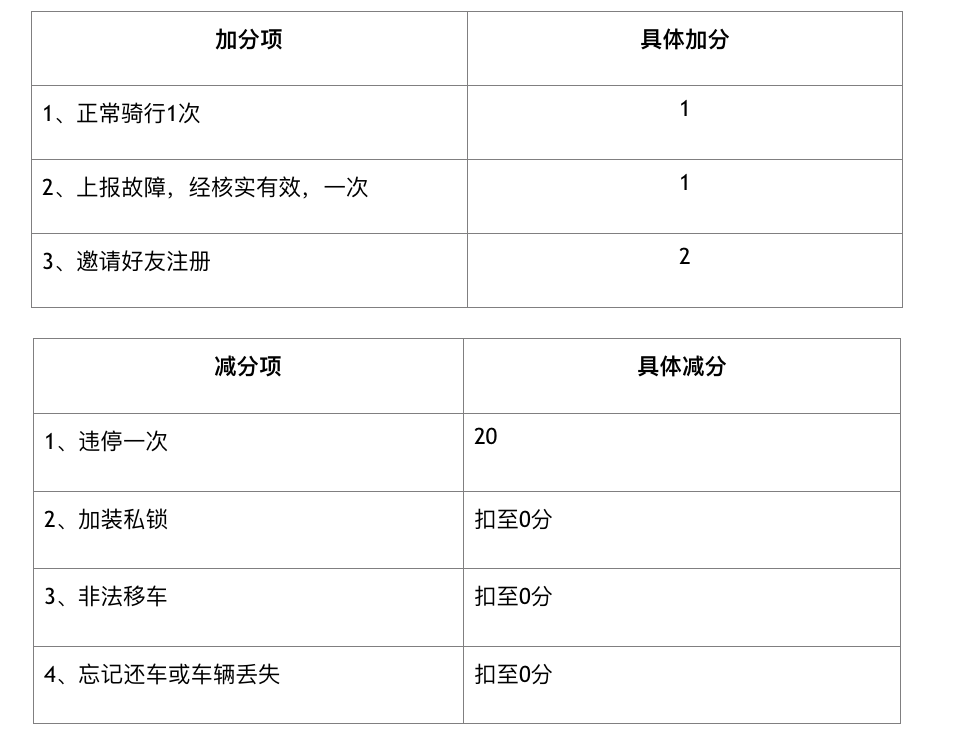

电滴出行自创办以来，始终坚持的理念是用技术的手段向游客提供便捷，经济，环保的旅游出行的解决方案。为了实现这个目标，我们在禁区，设置数量众多的租车点，释放游客的双脚，让你发现更多的美，我们提倡鼓励正确的为，制止错误的用车行为。以下为信用积分规则，将帮助大家更好的了解如何使用电滴租车。
每个用户默认100信用积分为初始分数，最低分数为0，分数越高，意味着越符合用车原则，而信用分值越低，意味着该用户有过不恰当的使用行为。
信用分过低时，用车的单价亦会受到影响。当电滴租车的信用分低于80分时，用车的单价会根据信用分数调整至100元/半小时。（不必担心，注册时初始化信用分为100）
